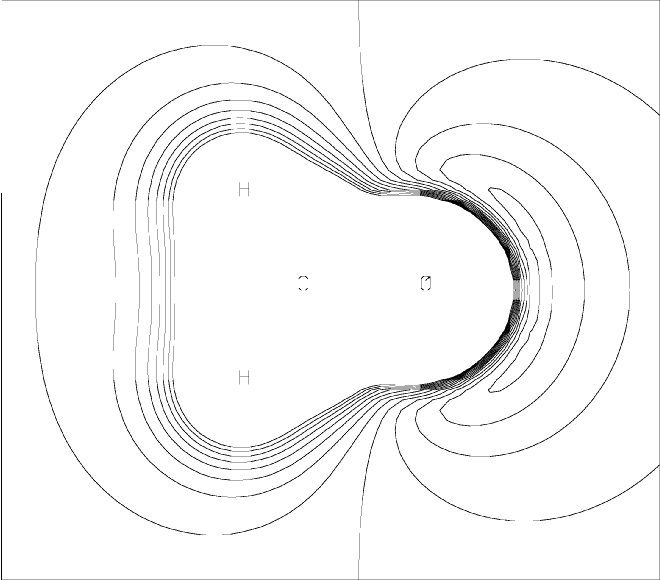

The PMEP procedure [45,46] is a technique for rapidly calculating the electrostatic properties of a molecule. Written by Prof. George Ford and Dr. Bingze Wang* at Southern Methodist University, Dallas, Texas, the procedure is ideally suited for large systems.
The PMEP procedure has two main functionalities: first, to generate a 2-D grid of points giving the Electrostatic Potential (ESP) in a cross-section through a system, and second, to generate atomic charges based on the calculated ESP. At present, the method is limited to AM1 systems containing H, C, N, O, F, Cl, only.
ESP plots are generated in two steps. First, a MOPAC calculation generates a 2-D grid of points. This grid is then converted into a picture by the utility program ESPLOT. ESPLOT is very simple to use: the command is esplot <filename>, where <filename> is the name of the data-set. ESPLOT generates an on-line picture of the PMEP, and a HPGL file suitable for use in generating hard-copy. Because ESPLOT is so simple, it will not be discussed further. Instead, the rest of this discussion applies to the MOPAC calculation.
The grid generated by MOPAC consists of a 2-D array of points representing a cross-section through the system. The distance between points is a constant Ångstroms. The size represented by the grid is roughly 4 Ångstroms plus twice the size of the system. For example, N2 has a N-N distance of Å, and the default associated grid represents a rectangular area of 5.8 by 4.6 Å. Each grid point represents the potential in kcal/mol which a unit positive charge would experience due to the electrostatic field of the system.
ESP grids are generated by specifying PMEP and PRTMEP. An example of a data-set for the PMEP procedure is shown in Figure 1. The PMEP plot for this data set is shown in Figure 2. This plot can be compared with the MEP plot.
Figure 1:
Data Set for PMEP Calculation of Formaldehyde
1scf AM1 PMEP MINMEP PRTMEP Formaldehyde (Cross-section in plane of molecule) Generate a 2-D grid of PMEP potentials for 'esplot' to use O 0.00000000 0 0.0000000 0 0.0000000 0 0 0 0 -0.2759 C 1.22732374 1 0.0000000 0 0.0000000 0 1 0 0 0.1384 H 1.11047287 1 122.2253516 1 0.0000000 0 2 1 0 0.0688 H 1.11048351 1 122.2158646 1 179.9998136 1 2 1 3 0.0687 |
Figure 2:
Parametric Molecular Electrostatic Potential around Formaldehyde|
 |
By default, the grid is centered on the center of the molecule, and the X-Y plane at Z=0 is selected. Other grids can be chosen using PMEPR. PMEPR uses three atoms and an optional offset to define the plane to be used. It has enough options to allow any plane to be easily specified.
By use of QPMEP, a set of atomic charges can be calculated. This set of charges is the best least squares fit to the charges which reproduce the ESP of the Connolly or Williams surfaces.